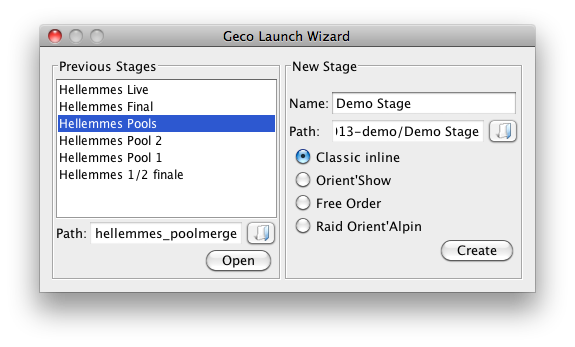

Launch Wizard
The launch wizard is the first window to pop up when opening Geco. It allows you to open an existing stage or create a new one from a set of predefined formats.

Previous Stages
Geco remembers and displays the list of stages previously opened on your computer.
- To open a previous stage, select it in the list and click the Open button.
- Or, you can simply double-click on its name in the list.
- If the stage does not appear in the list (because you just import it from another media),
 click on the folder button next to the Path and select the folder with data; then, click on the Open button.
click on the folder button next to the Path and select the folder with data; then, click on the Open button.
How to spot a folder with stage data? Simple, it contains a file named geco.prop as well as multiple CSV files.
New Stage
Geco lets you create a new stage by giving it a name, choosing a folder, and selecting a format.
- Start by filling in the name.
- When you change your focus, the launcher updates the Path field to show the default path to stage data (including the stage name).
- If you don’t agree with the default path, you can change it by clicking the folder button next to it and create/select another folder. This folder must be empty.
- Select a format for the stage.
- Click the Create button: Geco will create the files and launch the main window.
The three following formats are available.
- Classic (inline course): controls must be taken in order
- Free Order: runner chooses in which order to take the controls
- Orient’Show: time penalties and MP limit, knockout qualifications,…
A fourth experimental format is available. The format for Raid Orient’Alpin (ROA):
- starts with a Free Order (to scatter runners)
- then switches to a classic course at a given control
- also provides a leg neutralization function to neutralize rest/shooting sections.